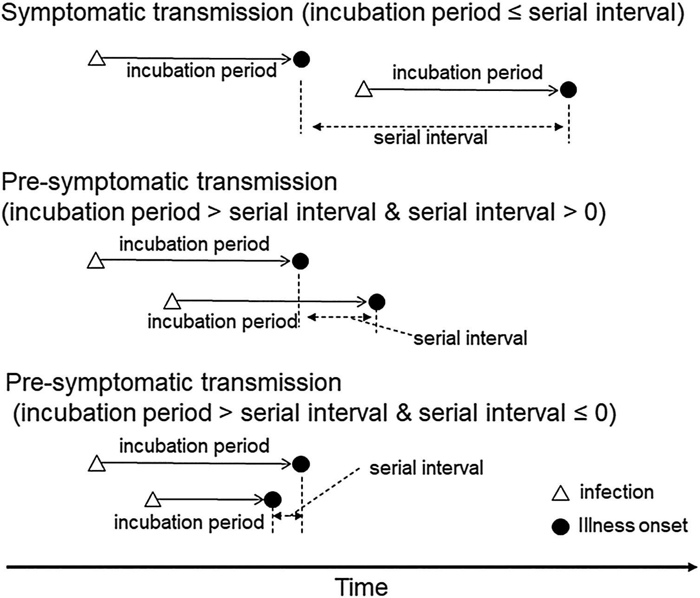

Video from the MRC Centre for Global Infectious
Disease Analysis, Ep 76. Science In Context - Epi Parameter Review Group
with Dr Anne Cori (27-07-2023) at https://youtu.be/VvpYHhFDIjI?si=XiUyjmSV1gKNdrrL
Figure 3
Image 1 of 1: ‘[decorative]’
A schematic of the relationship of different time
periods of transmission between an infector and an infectee in a
transmission pair. Exposure window is defined as the time interval
having viral exposure, and transmission window is defined as the time
interval for onward transmission with respect to the infection time (Chung
Lau et al. 2021).
Figure 4
Image 1 of 1: ‘[decorative]’
Serial intervals of possible case pairs in (a)
COVID-19 and (b) MERS-CoV. Pairs represent a presumed infector and their
presumed infectee plotted by date of symptom onset (Althobaity
et al., 2022).
Figure 5
Image 1 of 1: ‘[decorative]’
Fitted serial interval distribution for (a) COVID-19
and (b) MERS-CoV based on reported transmission pairs in Saudi Arabia.
We fitted three commonly used distributions, Lognormal, Gamma, and
Weibull distributions, respectively (Althobaity
et al., 2022).
Figure 6
Image 1 of 1: ‘[decorative]’
Serial interval of novel coronavirus (COVID-19)
infections overlaid with a published distribution of SARS. (Nishiura
et al, 2020)
Figure 7
Figure 8
Image 1 of 1: ‘[decorative]’
The four probability functions for the normal
distribution (Jack
Weiss, 2012)
Figure 9
Image 1 of 1: ‘[decorative]’
Timeline for chain of disease reporting, the
Netherlands. Lab, laboratory; PHA, public health authority. From Marinović
et al., 2015
Figure 10
Image 1 of 1: ‘[decorative]’
Rt is a measure of transmission at time t.
Observations after time t must be adjusted. ICU, intensive care unit.
From Gostic
et al., 2020
Figure 11
Image 1 of 1: ‘[decorative]’
The relationship between the incubation period and
serial interval. From Nishiura
2020
Figure 12
Image 1 of 1: ‘[decorative]’
Parameter estimates. Plausible ranges for the key
parameters R0 and θ (read the main text for sources) for four viral
infections of public concern are shown as shaded regions. The size of
the shaded area reflects the uncertainties in the parameter estimates.
Fraser et
al., 2004